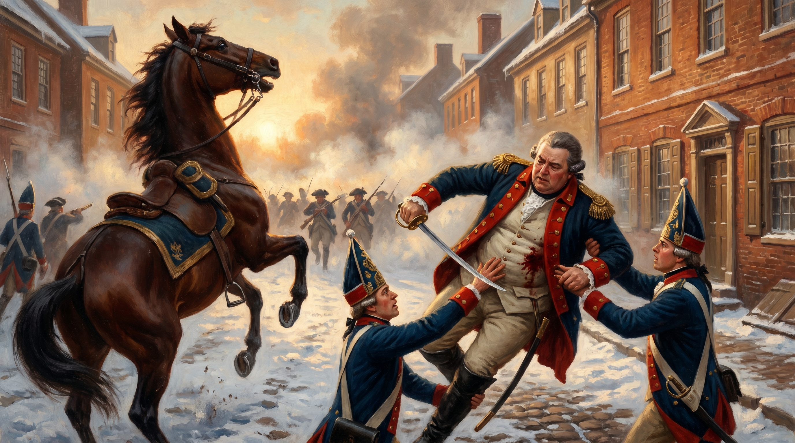
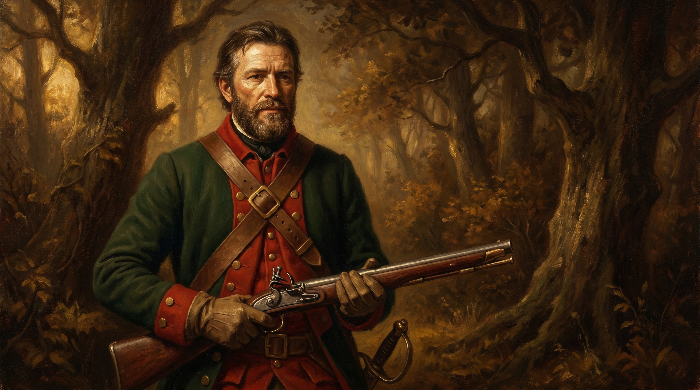

For two hundred years, Americans have believed three things about the German soldiers who fought for the British during the Revolutionary War. That they were greedy mercenaries. That they were drunken cowards at Trenton. That they were a bloodthirsty foreign menace unleashed on freeborn Englishmen by a tyrant king.
All three are wrong.
The cultural endpoint of the lie is Washington Irving's headless Hessian, the ghost of a German trooper "whose head had been carried away by a cannonball," riding through the woods of Sleepy Hollow forever in search of it. Irving published the story in 1820, forty years after the war ended, and even by then the Hessian had stopped being a person and become a creature. Faceless. Decapitated. Monstrous. A useful villain. Around 30,000 German soldiers fought in the Revolution. Roughly 5,000 to 6,000 of them stayed and became Americans. Their descendants are walking around right now, mostly unaware that their ancestors are still cast as the ghouls of American folklore.
This article exists to take that apart.
Where the Myth Came From
The propaganda was deliberate from day one. When Thomas Jefferson drafted the Declaration of Independence in the summer of 1776, the very first Hessians had not yet set foot on American soil. He attacked them anyway. King George III, Jefferson wrote, was "transporting large Armies of foreign Mercenaries to compleat the works of death, desolation and tyranny, already begun with circumstances of Cruelty & perfidy scarcely paralleled in the most barbarous ages, and totally unworthy the Head of a civilized nation."
That sentence did the work the Patriots needed it to do. It framed the German soldier as a monster before any American had met one. It also gave the colonial press its template. By the time Hessian regiments landed at Staten Island that August, the newspapers were primed. Stories of mass rapes, bayoneted prisoners, and burning farms filled the broadsides. Most of those stories were invented or wildly exaggerated. American officer Aaron Burr, the same Aaron Burr who would later kill Alexander Hamilton, investigated the atrocity claims and wrote flatly that "various have been the reports concerning the barbarities committed by the Hessians, most of them [are] incredible and false."
The cleverest piece of anti-Hessian work appeared in early 1777, just after Washington's victory at Trenton. It was a fake letter, written in French, supposedly from a German "Count de Schaumberg" to a "Baron Hohendorf." The Count expressed delight at the high Hessian casualties because the British paid bounties for each dead soldier. He suggested that medics let the wounded die to maximize the payout. The whole document is now called The Sale of the Hessians. It was a forgery. The Count, the Baron, and the letter itself were fabricated to disgust European readers and encourage Hessian desertion. For more than a century the piece has been attributed to Benjamin Franklin, but the attribution rests on a guess made in 1874 by a biographer named John Bigelow, who reasoned that nobody else could have written it. The editor of The Papers of Benjamin Franklin, William Willcox, found no evidence Franklin had anything to do with it. The author remains unknown.
What is not unknown is the purpose. The Continental Congress needed the Germans to be inhuman. A war against fellow Englishmen was a civil war. A war against foreign monsters was something else.
Myth One: They Were Mercenaries
A mercenary, in eighteenth century international law, was a specific thing. The Swiss legal scholar Emer de Vattel laid it out in his 1758 work The Law of Nations, which was the standard reference of the era. A mercenary was an individual who personally enlisted in a foreign army for personal financial gain, abandoning his native allegiance to do so.
The Hessians did none of that.
They did not sign up with the British. They were ordered to America by their own princes. They marched under their own flags. They were commanded by their own officers. They were tried under their own military codes. They were paid by their own treasuries at their own standard rates. The transaction was between governments, not between the British and the individual soldier. Vattel had a word for that arrangement, and it was not mercenary. It was auxiliary.
The men themselves came from the Prussian-style Canton system, in which territories were divided into recruiting districts and each district was permanently tied to a specific regiment. Recruits were not drifters and they were not soldiers of fortune. They were farm boys, working-class kids, the sons of the rural Lutheran underclass, conscripted or enlisted as part of a legal obligation to their sovereign. The Landgrave of Hesse-Cassel kept somewhere between 5 and 7 percent of his population in uniform in peacetime, a higher ratio than Prussia itself.
The money is where the mercenary myth keeps its grip. The British did pay enormous subsidies, in the millions of pounds sterling, to the German princes. The Landgrave of Hesse-Cassel took in roughly thirteen years' worth of his normal tax revenue from the deal. But that money went to the treasury, not the trooper. Friedrich II used most of it to lower taxes, fund public works, run a welfare system, and remit taxes for the families of his deployed soldiers. The individual Hessian got his standard military pay, which was decent by the standards of European armies and slightly better than what a British private earned, but nobody was getting rich.
"The Hessians weren't individual soldiers who signed up with Britain to make money. They were troops raised by their respective German rulers, and then these rulers contracted with Britain to essentially rent out complete military units with their own commanders."
The modern historical consensus is unambiguous. Friederike Baer, whose 2022 book Hessians: German Soldiers in the American Revolutionary War is now the definitive English-language study, puts it plainly in the quote above. Rodney Atwood and Dennis Showalter, both major military historians who worked the subject before her, reach the same conclusion. The mercenary label is propaganda. It always was.
Myth Two: They Were Drunk at Trenton
This is the big one. The story most Americans grow up with goes like this. On Christmas night 1776, the Hessian garrison at Trenton was deep in its cups, sleeping off a holiday bender, when George Washington crossed the Delaware and caught them with their boots off. The Patriots won because the Germans were too hungover to fight.
It is a great story. None of it is true.
The man who shredded the myth most completely was John Greenwood, a sixteen-year-old fifer in the Continental Army who fought at Trenton and then helped supervise the captured Hessians afterwards. He was on the ground. He guarded the prisoners. He had every patriotic reason to claim he had beaten a drunken enemy. Instead he wrote: "I am certain not a drop of liquor was drunk during the whole night, nor, as I could see, even a piece of bread eaten." Elsewhere he doubled down. "I am willing to go upon oath that I did not see even a solitary drunken soldier belonging to the enemy."
The military historian Edward G. Lengel, who has written extensively on Washington, says it directly: "The Germans were dazed and tired but there is no truth to the legend claiming that they were helplessly drunk." Mark Maloy, a National Park Service historian whose book Victory or Death covers the Ten Crucial Days from Trenton to Princeton, calls the drunken Hessian story "the biggest myth of the Battle of Trenton" and traces it to British officers spreading rumors after the battle to humiliate the Germans whose embarrassing defeat had cost them New Jersey.
What actually beat the Hessians at Trenton was something far less dramatic and far more honest. They had been on alert for three weeks. American militia had been running constant hit-and-run attacks on the Trenton garrison since mid-December, and Colonel Johann Rall had kept his men sleeping in full uniform, with weapons ready, night after night. They were exhausted. They were also operating under genuinely terrible weather. The same nor'easter that nearly stopped Washington's crossing of the Delaware was hammering Trenton with sleet, hail, and freezing rain. The morning patrols that should have spotted Washington's army were cancelled because of the storm. The musket powder in the Hessian guard posts was soaked through and would misfire when the moment came.
Rall himself had ignored three separate warnings of an attack. One came from a British spy, one from a Loyalist doctor, one from two American deserters. On Christmas night he was at the home of a Trenton merchant named Abraham Hunt, playing cards, when a local Tory pushed a written warning into his hand. Rall stuffed the note into his coat pocket without reading it. American surgeons found the unopened note when they cut away his uniform after the battle.
He had refused to build defensive fortifications. His superior, Colonel von Donop, had ordered redoubts dug. Rall ignored that order too, partly out of arrogance, partly out of a stubborn conviction that the Americans would never attack. "Let them come," he reportedly said. "We will go at them with the bayonet."
They came. The bayonet failed. When Washington's columns hit Trenton just after eight in the morning of December 26, the soaked powder neutralized the Hessian infantry's standard volley fire. American artillery dominated King and Queen Streets within minutes. Rall got on his horse to organize a counterattack and was struck by two musket balls in the side. He was carried into St. Michael's church and died the next evening. Of his 1,500 men, nearly 900 were captured. The Americans lost two killed, both from exposure on the march, and four wounded.

The Germans were not drunk. They were beaten by a desperate enemy who outthought them, by a storm that broke their weapons, and by a commander who would not read his mail.
Myth Three: They Were Foreign Monsters
The Hessian as bloodthirsty alien is the third pillar of the legend, and it does not survive a single afternoon with the primary sources.
The Hessian Jägers, the elite light infantry who carried hunting rifles and operated as skirmishers, were not recruited from prisons or gutters. They were professional foresters, gamekeepers, huntsmen, men whose civilian work involved tracking animals through dense German woods. They became deadly accurate sharpshooters in America because they had been deadly accurate sharpshooters before America. Their commander, Captain Johann Ewald, kept one of the most respected military diaries of the entire war. Modern historians treat his Diary of the American War as essential reading on Revolutionary-era partisan warfare. Ewald was professional, observant, often disgusted by British strategic blundering, and entirely human.

He was not alone. A young German named Christian Friedrich Michaelis volunteered for the Hessian corps so he could search for mastodon bones in New York. Another, Friedrich Adam Julius von Wangenheim, published books on the trees and shrubs of North America while on duty. The German soldiers wrote thousands of pages of diaries, letters, and reports during their seven years in America. They commented on the landscape. They commented on the prosperity of white American farmers compared to the European peasants they had left behind. They commented, repeatedly and often with horror, on American slavery. Baer notes that the German soldiers were "oppressed and mistreated, often very cruelly by whites," as one of them wrote of Black Americans, was something they had not seen at home and could not square with the rhetoric of liberty echoing around them.
This is not the diary of a monster. This is the diary of an observant professional in a strange country.
The Hessians did loot. So did everyone in the eighteenth century, including the American militia they were fighting. Looting was the standard supplementary income for soldiers across European armies, technically forbidden and almost universally tolerated. Hessian conduct in 1776 New Jersey was harsh and made plenty of civilians furious, but it did not exceed the brutality of any other army in the war, and the worst of the atrocity stories were political fiction. Burr investigated them and called most of them "incredible and false." His verdict has not been improved upon in 250 years.
What is true is that the Hessians fought hard. At the Battle of Long Island in August 1776, their bayonet charge broke American lines and contributed to the largest single defeat of Washington's army. At Fort Washington that November, they led the assault that captured roughly 2,800 American prisoners, the worst capitulation of the war until Charleston in 1780. They suffered heavily too. A Brunswick detachment under Colonel Friedrich Baum was annihilated at Bennington in August 1777, where 207 Germans were killed and 700 captured, and the loss broke Burgoyne's Saratoga campaign before it had finished failing. They fought well. They died in large numbers. They were soldiers.
What They Actually Were
The numbers are unsparing. Of the roughly 30,000 German troops sent to North America, about 7,500 died there. Only 1,200 of those died in combat. The rest were killed by disease, exposure, malarial swamps in West Florida, the Atlantic crossing, the brutal winters of the northern colonies. The Waldeck regiment posted to the Gulf Coast lost men to yellow fever faster than American musket balls could touch them.
Of the 23,000 who survived, roughly 17,000 sailed back to Europe in 1783 and were folded back into the peacetime armies of their respective principalities. Between 5,000 and 6,000 chose to stay. Some had married American women. Some had been prisoners of war billeted out to labor on German-American farms in Pennsylvania and Virginia, where they had seen what a country without serfdom and feudal restrictions actually looked like. Some had simply decided that 50 acres of unappropriated land, offered by the Continental Congress to any German deserter, was a better deal than returning to the rigid social hierarchy of the Holy Roman Empire. They anglicized their names and disappeared into the broader stream of German-American immigration, which by the nineteenth century would become the largest single ethnic group in America.
The most valuable thing the Hessians left behind, for historians at least, is the paper. Captain Ewald's diary. Captain Pausch's account of the artillery train at Saratoga. The journals of Baroness Frederika Riedesel, who followed her Brunswicker husband through the Burgoyne campaign and wrote one of the most vivid civilian accounts of the war. The diaries of Johann Conrad Doehla and Stephen Popp, enlisted men from Ansbach-Bayreuth who recorded the siege of Yorktown and their years as prisoners in American backcountry camps. Modern academics, Baer chief among them, now treat the Hessian writings as a third perspective on the Revolution, neither British nor American, often more honest about the war than either side wanted to be.
That is what was thrown away when the Hessian became a faceless ghost in a folk story.
Why the Truth Matters
The Headless Horseman has been good for American culture. He is fun. He sells movies and Halloween decorations and a whole industry around Sleepy Hollow. He is also, in a way nobody quite notices, an act of historical erasure that has lasted longer than the United States itself.
The German soldier who came to America in 1776 was a conscripted farm boy in a blue coat who marched under a foreign king's flag because his own sovereign had ordered him to. He was probably literate. He probably wrote home to his wife or his mother. He probably looked at American slavery and felt sick. He fought hard, was beaten at Trenton by an enemy he had underestimated, and either died of fever in a swamp or stayed and became somebody's American great-great-grandfather.
That story is harder than the one with the headless ghost. It is also true.